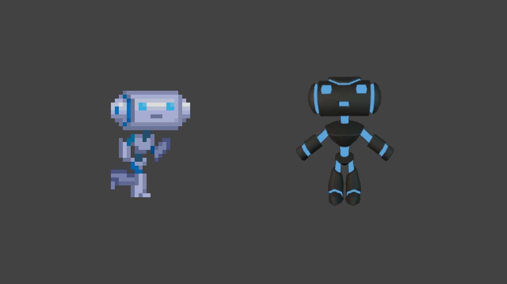
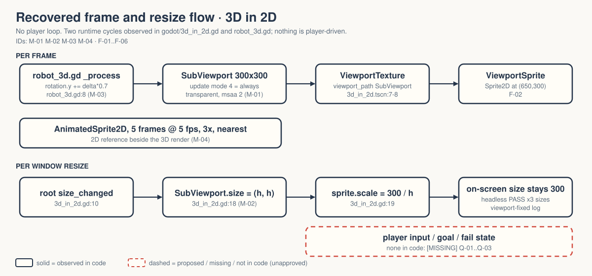

A 3D robot is rendered into a SubViewport and shown as a plain 2D sprite that stays sharp when the window resizes.
OBSERVED in code INFERRED implied, evidence stated MISSING nobody has decided
Gate — unsigned at time of writing. Nothing here is approved. → GDD.md header

OBSERVED file shipped with the Godot demo (godot/README.md:22). Walker has inspected no GPU pixels (FRICTIONAL.md:19-20).
MISSING Why this exists in Walker, who it is for, whether it ever becomes a game. Q-01, Q-02, Q-03.
INFERRED The pending "native-4K Liam films" (README.md:8) suggest it is film source material.

Solid = code. Dashed = the player loop a game would need; not in code.
| ID | Behaviour | Tag |
|---|---|---|
| M-01 | 3D robot → 300×300 transparent SubViewport | OBSERVED |
| M-02 | Resize: target (h,h), sprite ×300/h — width ignored | OBSERVED |
| M-03 | Idle rotation 0.7 rad/s | OBSERVED |
| M-04 | 5-frame 2D sprite beside it | OBSERVED |
3 of 7 features are CORE (F-01..F-03). Over the 40% line; for a demo whose point is those three, harmless. Both options in Q-07.
Q-01 purpose · Q-02 audience · Q-03 demo or game · Q-04 attribution · Q-05 visual criteria · Q-06 film done · Q-07 CORE · Q-08 narrow windows
Zelda: answer Q-01 first. Until someone says what this is for, every other answer is a guess. → decisions.md